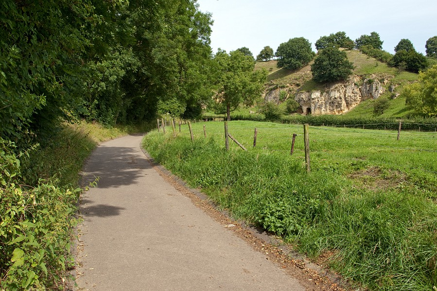

LimburgIk speelde het Limburg Open toernooi dat van 6-9 juni 2014 werd gehouden in Maastricht. Dit is alweer de vierde keer dat ik aan dit toernooi meedoe omdat ik het een erg leuk toernooi vind. Ik en een aantal vrienden hadden een boerderij gehuurd wat heel gezellig was. Toeval was dat mijn ouders een caravan op een camping hadden gehuurd die vrijwel naast onze boerderij stond. De boerderij stond op een steile heuvel die voor sommige mensen zelfs te zwaar was om te beklimmen. Zelf lukte me het wel om de Heuvel te beklimmen met de fiets maar ik kwam wel elke keer helemaal bezweet boven aan.Gelukkig konden we heuvel af naar de toernooizaal zodat we niet te moe aankwamen. Daarnaast was het fijn dat Peter Ypma de weg al wist. In de eerste ronde speelde ik tegen Simon Commercon(2219) met zwart. In de opening werden snel de dames geruild maar ik won wel een pion. Mijn tegenstander had alleen veel compensatie met zijn loperpaar terwijl mijn loper op b7 vrijwel niet kon bewegen. Met kleine zetjes kwam ik steeds wat verder totdat ik na een lange partij eindelijk gewonnen stond. Denkend dat ik het puntje al op zak had begon ik ineens erg slecht te spelen en gaf ik al mijn voordeel weer weg. In wederzijdste tijdnood wist ik uiteindelijk te winnen na heel wat avonturen. Dit was alleen pas het begin van de avond. Ik was om 00:30 klaar en nu moesten we nog naar huis met een aantal mensen. Alleen niemand wist de weg dus zetten we de gps maar aan. De gps leidde ons langs allemaal vreemde bospaadjes terwijl we niks konden zien in het donker. Na 2.5 uur fietsen besloten we weer helemaal naar de speelzaal te fietsen waar we werden opgehaald door Peter Ypma.  De bemelerberg! Toen ik eindelijk weer bij de boerderij was kwam ik er ook nog achter dat ik de volgende dag tegen mijn broertje Lucas moest! Na prima te hebben geslapen met 25 man op een kamer kwam ik helemaal uigerust aan de partij en had ik er veel zin in! Het begin van onze partij ging vrijwel hetzelfde als de partij die we tegen elkaar speelden in Mallorca: Jorden van Foreest-Lucas van Foreest 1.e4 e5 2.Pf3 Pc6 3.d4 exd4 4.Pxd4 En hier in Mallorca speelde Lucas 4...g6 5.Pc3 Lg7 6.Le3 Pge7 een zijvariant die Lucas vaker speelt alleen nu besloot Lucas het net iets anders te doen door meteen Pge7 te spelen. Ik ging verder met 5.Pc3 en na 5...g6 speelde ik vrijwel a tempo 6.Le3. Ik had hier alleen al meteen kunnen winnen met 6.Lg5! en na 6...Lg7 (als zwart iets anders speelt komt de witte zwartveldige loper met beslissende gevolgen op f6) wint 7.Pd5. Nadat ik dit had gemist speelde ik vrij goed en ik won vrij gemakkelijk. In de derde rone moest ik tegen de zweed Emanuel Berg. Een sterke grootmeester. Ik wist voor de partij dat mijn tegenstander vaak in tijdnood kwam dus ik probeerde een vrij scherpe stelling te krijgen wat lukte. Ik verloor 2 pionnen maar ik had er wel wat tegenkansen voor. Mijn tegenstander begon steeds langer na te denken en in tijdnood gaf hij de hele partij weg. Herman Grooten heeft hier deze partij geanalyseerd. Na deze partij kon ik gelukkig wel de weg naar de boerderij direct terugvinden :) In de 4e ronde speelde ik tegen GM Sipke Ernst. Sipke ken ik erg goed, hij heeft mij 4 jaar lang getraind en we hebben echt al heel vaak tegen elkaar gespeeld. Ik had wit maar wist geen voordeel te behalen. En kwam zelfs iets minder te staan. Sipke begon alleen een paar vreemde zetten te spelen en na 25 zetjes stond ik zelfs iets beter. Sipke bood remise aan, eigenlijk had ik moeten doorspelen maar ik nam het toch aan. In de 5e ronde kwam de echte uitdaging. Ik moest tegen de uiteindelijke toernooiwinnaar Erwin L'ami met zwart. Ik neem aan dat hij geen introductie nodig heeft. Voor de partij had ik geen idee wat ik moest spelen en ik had ook niet echt tijd om voor te bereiden dus uiteindelijk besloot ik maar gewoon slavisch te spelen. Erwin koos niet helemaal de goede opstelling en na 20 zetten stonden zijn stukken ietswat onhandig. Tien zetten later bood ook hij remise aan wat aannam. Het toernooi gaat erg goed! En in de 6e ronde moest ik tegen Lars Vereggen. Een gevaarlijke speler vind ik altijd. Kijk hieronder voor de analyse! Lars Vereggen-Jorden van Foreest. Na deze zware partij was ik in de laatste ronde vrij moe en was ik tevreden met een snelle remise tegen Marcel Harff. Gedeeld tweede: een fantastisch resultaat! Ik hoop dat het verder ook zo goed gaat! |